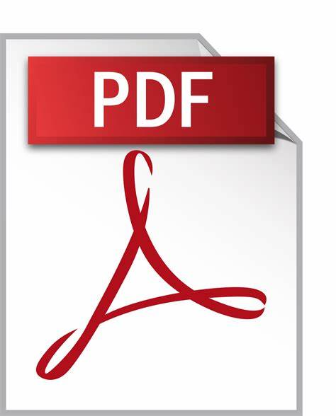

Quem sou eu?
Sou guilherme barbosa da silva e sou estudante de engenharia de software na estácio.
Estou aprendendo sobre a lógica da programação e o desenvolvimento web full-stack
Que engloba todo o desenvolvimento web até o banco de dados
Meu Cronograma
| Cronograma | |||||||||||||||||||
| NEW | |||||||||||||||||||
| Horários | |||||||||||||||||||
| NEW | |||||||||||||||||||
| 05:00 AM | 06:00 AM | 07:00 AM | 08:00 AM | 09:00 AM | 10:00 AM | 11:00 AM | 12:00 AM | 13:00 PM | 14:00 PM | 15:00 PM | 16:00 PM | 17:00 PM | 18:00 PM | 19:00 PM | 20:00 PM | 21:00 PM | 22:00 PM | 23:00 PM | 00:00 PM |
| NEW | |||||||||||||||||||
| Atividades | |||||||||||||||||||
| NEW | |||||||||||||||||||
| Despertar | Acordar | Iniciar | Arrumar a cama | Preparar o café | Ir a academia | Treinar | Descansar | Voltar | Tomar banho | Almoçar | Estudar | Treinar | Praticar | Meditar | Ir ao trabalho | Intervalo | Voltar | Tomar banho | Estudar |
| NEW | |||||||||||||||||||
| Status | |||||||||||||||||||
| NEW | |||||||||||||||||||
| Bom | Legal | Otimo | Demais | Muito bom | Excelente | Explendido | Excepcional | Daora | Good | OKAY | Right now | Lets,go | Good job | Good,place | Nice,work | Nice,joob | Very nice | So good | Paz |
| NEW | |||||||||||||||||||
| NOTAS | |||||||||||||||||||
| NEW | |||||||||||||||||||
| 10 | 10 | 10 | 8 | 8 | 8 | 10 | 8 | 7 | 7 | 8 | 9 | 10 | 8 | 10 | 8 | 7 | 8 | 7 | 9 |
| NEW | |||||||||||||||||||
| FIM | |||||||||||||||||||
| NEW | |||||||||||||||||||
Projetos
Cursos
Engenharia de software 
Se baseia na estrutura e arquitetura de software desde á análise,estrutura e implementação
Estudando a fundo conhecendo e desenvolvendo novas soluções, tecnologias especialidades aos usuários
DEV FULL-STACK 
Se baseia em toda a estrutura de desenvolvimento web desde á interface até o banco da dados
Ela é o processo completo de desenvolvimento sendo mais generalista que somente uma área
Materias
Engenharia de Software
| Arquitetura Computacional |
| Interação comunicação entre o software e o hardware |
| Desenvolvimento de software |
| Arquitetura e desenvolvimento do software desde a análise,manutenção e implementação |
| Python |
| Linguagem de alto nível sendo orientada e estruturada á objetos |
| Segurança da Informação |
| Proteção de dados contra ataques cibernéticos realizados por hackers |
| Matemática e lógica |
| Fortalecimento do raciocinio lógico para realizar calculos nas linguagens de programação |
| Desenvolvimento web |
| Utilizando as ferramentas de ponta como html,css e javascript |
| FIM |
Engenharia de software
| Comportamento Organizacional |
| Formas da equipe se comportar numa organização |
| Modelagem de processos |
| é uma técnica usada para representar graficamente as etapas e fluxos de trabalho dentro de uma organização |
| Java orientado a objetos |
| é uma linguagem de programação amplamente utilizada que suporta o paradigma de programação orientada a objetos (POO). |
| Banco de dados |
| é uma coleção estruturada de dados que permite armazenar, organizar e gerenciar informações de forma eficiente. |
| Engenharia do produto |
| é o processo de concepção, desenvolvimento e gestão de um produto, desde a ideia inicial até a sua produção e lançamento no mercado |
| Engenharia de usabilidade |
| é uma disciplina que se concentra em tornar produtos e sistemas mais fáceis e agradáveis de usar |
| Big data em python |
| refere-se ao tratamento e análise de grandes volumes de dados que não podem ser gerenciados de maneira eficiente com ferramentas tradicionais. |
| My sql |
| é um sistema de gerenciamento de banco de dados relacional (RDBMS) amplamente utilizado, que utiliza a linguagem SQL (Structured Query Language) para gerenciar e manipular dados. |
| FIM |
Materias complementares
Linguagens
 Python
Python- Uma linguagem de programação versátil e de fácil leitura, amplamente utilizada em ciência de dados, aprendizado de máquina e desenvolvimento web.
 Java
Java- Uma linguagem de programação orientada a objetos, famosa por sua portabilidade e robustez, frequentemente usada em aplicações corporativas e desenvolvimento Android.
 Javascript
Javascript- A linguagem de programação essencial para o desenvolvimento web, permitindo a criação de páginas interativas e dinâmicas no lado do cliente.
 RUBY
RUBY- Conhecida por sua sintaxe elegante e legibilidade, Ruby é popular no desenvolvimento web, especialmente com o framework Ruby on Rails.
 C
C- Uma linguagem de programação de baixo nível que serve como base para muitas outras linguagens, conhecida por seu desempenho e controle sobre recursos do sistema.
 C++
C++- Uma extensão da linguagem C que adiciona suporte à programação orientada a objetos, amplamente utilizada em sistemas, jogos e aplicativos de alto desempenho.
Atividades
| Análise de Sistemas |
| Envolve a compreensão e definição dos requisitos do sistema, além da modelagem de processos e fluxos de trabalho. |
| Banco de Dados |
| Foca no design, implementação e gerenciamento de bancos de dados, incluindo SQL e técnicas de otimização de consultas. |
| Arquitetura de Software |
| Explora os princípios de design de sistemas, padrões arquiteturais e como organizar componentes de software para melhor escalabilidade e manutenção. |
| Testes de Software |
| Aborda métodos e técnicas para garantir a qualidade do software, incluindo testes unitários, integração e aceitação. |
| Usabilidade e Experiência do Usuário (UX): |
| Foca na criação de interfaces amigáveis e na otimização da experiência do usuário em sistemas e aplicativos. |
| FIM |
Certificados
Certificados
| Certificados | ||||
| NEW | ||||
| HTML | Html e css | Java | LGPD | Segurança da Informação |
| NEW | ||||
|  | ||||
| NEW | ||||
| Baixe aqui | Baixe aqui | Baixe aqui | Baixe aqui | Baixe aqui |
| NEW | ||||
| FIM | ||||